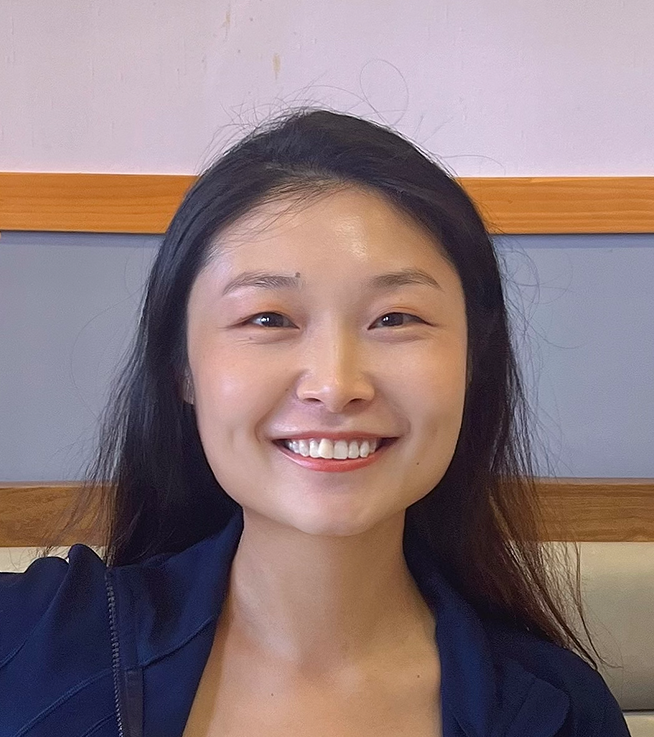

Hello, I'm
宋元元
Postdoctoral Associate
Department of Earth, Atmospheric and Planetary Sciences
Massachusetts Institute of Technology

My research broadly explores how the ocean, atmosphere, and sea ice interact — connecting tropical variability, mid-latitude extremes, and polar change. I work across a wide range of timescales, including seasonal, interannual, and decadal variability, as well as long-term climate trends.
I integrate coupled climate models, stand-alone ocean/atmosphere models, statistical diagnostics, observations and state estimates, with the goal of advancing a physically grounded understanding of the coupled Earth system.
As anthropogenic greenhouse gases increase heat retention in the Earth system, the ocean absorbs nearly 98% of the excess heat. Understanding where and how ocean temperature changes occur is central to assessing impacts on human activities and marine ecosystems. My research focuses on identifying the physical mechanisms that shape patterns of ocean temperature change under atmospheric forcing, and how sea surface temperature anomalies feed back onto atmospheric circulation.
I investigated zonal differences in upper-ocean temperature changes in the Southern Ocean (south of 35°S) from the perspectives of both anthropogenic trends (Song et al., 2025, Nature Communications) and decadal internal variability (Song et al., 2024, Journal of Climate). These studies reveal pronounced zonal contrasts between the Atlantic–Indian Ocean and Pacific sectors, previously overlooked due to prevalent use of zonal-mean diagnostics. Using large ensemble climate models (CESM2, CMIP6), stand-alone ocean modeling, and reanalysis datasets, I demonstrated that surface wind changes dominantly drive zonal temperature contrasts via modulating ocean heat transport, rather than through local surface heat fluxes.
Polar regions are among the most sensitive components of the climate system. Arctic surface temperatures have risen at nearly four times the global mean rate, accompanied by rapid sea-ice decline, while mid-latitude regions experience increasingly frequent and intense extreme weather events. My research seeks to clarify the dynamical connections between Arctic sea-ice decline and mid-latitude and tropical atmospheric circulation.
I found that autumn sea-ice loss north of Russia enhances wintertime atmospheric blocking circulation, leading to cold anomalies over northern Eurasia (Song et al., 2023). The results reveal a positive feedback between sea-ice-induced stratospheric circulation and intensified tropospheric blocking, mediated by vertical wave propagation. I also examined the combined roles of Arctic sea-ice loss and Indian Ocean SST anomalies in driving the record-breaking 2020 rainfall over central–eastern China and Japan (Chen et al., 2021; Chen et al., 2022).
Sea surface temperature (SST) mediates heat, moisture, and momentum exchange between ocean and atmosphere, so biases in modeled SST propagate far beyond the surface into large-scale circulation, precipitation, storms, clouds, and estimates of climate sensitivity. In the Southern Hemisphere, SST errors have proven stubborn across CMIP generations, undermining confidence in regional and long-term global projections. A warm Southern Ocean skews the meridional temperature gradient, the eddy-driven jet, and how heat enters the ocean—quantities that anchor our understanding of future warming. Diagnosing the sources of SST bias is essential for narrowing uncertainty in the Earth system response to anthropogenic forcing.
Future changes in eastern- and central-type ENSO and their interactions with the tropical Atlantic and Indian Oceans remain highly uncertain due to substantial inter-model spread in future projections. I will investigate inter-basin tropical interactions under greenhouse-gas and aerosol forcing using large-ensemble simulations and machine learning to identify robust mechanisms and reduce projection uncertainty. This effort will contribute to improving predictability of global climate variability in a warming climate.
Negative climate tipping points—thresholds beyond which a system undergoes abrupt and potentially irreversible change—have become a major focus of recent climate research, particularly following the first Global Tipping Points Report (2023). The Atlantic Meridional Overturning Circulation (AMOC) is considered a potential climate tipping element under sustained freshwater forcing from Greenland melt. Since substantial uncertainty remains across climate models, I will constrain its stability threshold and quantify regional climate impacts across the North Atlantic by integrating large-ensemble simulations, sensitivity experiments, and paleoclimate proxies, with particular attention to early warning indicators and downstream effects on regional temperature and precipitation.
I will extend my work on ocean dynamics to examine how ENSO variability and AMOC changes influence marine ecosystems. By linking physical drivers to ecosystem variability, I aim to develop coupled physical–biological frameworks to improve projections of marine ecosystem resilience and broaden scientific impacts of my research.
Leader
Connect undergraduates, graduates, postdocs, and faculty through hosting seminars sharing career and research experiences. Award: $1,500 for 2025–2026 from MIT School of Science Quality of Life Grant.
Leader · 54 members
Award: $2,000 for 2024–2025 and $2,000 for 2025–2026 from MIT Center for International Studies. Initiate and host lunch seminars to foster multidisciplinary collaboration related to climate change at MIT.
Co-leader · 483 members
Host online seminars to foster multidisciplinary communication in the US.
Postdoc Representative
Represent postdoctoral researchers in the Department of Earth, Atmospheric and Planetary Sciences.
Volunteer
Serve as a science judge in this regional ocean sciences competition for Massachusetts high school students.